import pandas as pd
import numpy as np
import matplotlib.pyplot as plt
import matplotlib.ticker as mtick
# CONFIG
PATH = r"C:\Users\user\Downloads\files\fraud_detection"
IDENTITY_PATH = r"C:\Users\user\Downloads\files\fraud_detection\data\raw\train_identity.csv"
TRANSACTIONS_PATH = r"C:\Users\user\Downloads\files\fraud_detection\data\raw\train_transaction.csv"
TARGET_COL = "isFraud"
target_labels = ["Legitimate", "Fraudulent"]
target_colors = ["darkblue", "darkred"]IEEE-CIS Fraud Detection - Exploratory Data Analsysis
Setup
Load the data
transactions_df = pd.read_csv(TRANSACTIONS_PATH)
identity_df = pd.read_csv(IDENTITY_PATH)
print(f"Transactions dataset has: {transactions_df.shape[0]:,} rows and {transactions_df.shape[1]} columns")
print(f"Identity dataset has: {identity_df.shape[0]:,} rows and {identity_df.shape[1]} columns")
# merge
df = transactions_df.merge(
identity_df,
how='right'
)
display(transactions_df.head())
display(identity_df.head())
# list(transactions_df.columns)
# list(identity_df.columns)Transactions dataset has: 590,540 rows and 394 columns
Identity dataset has: 144,233 rows and 41 columns| TransactionID | isFraud | TransactionDT | TransactionAmt | ProductCD | card1 | card2 | card3 | card4 | card5 | ... | V330 | V331 | V332 | V333 | V334 | V335 | V336 | V337 | V338 | V339 | |
|---|---|---|---|---|---|---|---|---|---|---|---|---|---|---|---|---|---|---|---|---|---|
| 0 | 2987000 | 0 | 86400 | 68.5 | W | 13926 | NaN | 150.0 | discover | 142.0 | ... | NaN | NaN | NaN | NaN | NaN | NaN | NaN | NaN | NaN | NaN |
| 1 | 2987001 | 0 | 86401 | 29.0 | W | 2755 | 404.0 | 150.0 | mastercard | 102.0 | ... | NaN | NaN | NaN | NaN | NaN | NaN | NaN | NaN | NaN | NaN |
| 2 | 2987002 | 0 | 86469 | 59.0 | W | 4663 | 490.0 | 150.0 | visa | 166.0 | ... | NaN | NaN | NaN | NaN | NaN | NaN | NaN | NaN | NaN | NaN |
| 3 | 2987003 | 0 | 86499 | 50.0 | W | 18132 | 567.0 | 150.0 | mastercard | 117.0 | ... | NaN | NaN | NaN | NaN | NaN | NaN | NaN | NaN | NaN | NaN |
| 4 | 2987004 | 0 | 86506 | 50.0 | H | 4497 | 514.0 | 150.0 | mastercard | 102.0 | ... | 0.0 | 0.0 | 0.0 | 0.0 | 0.0 | 0.0 | 0.0 | 0.0 | 0.0 | 0.0 |
5 rows × 394 columns
| TransactionID | id_01 | id_02 | id_03 | id_04 | id_05 | id_06 | id_07 | id_08 | id_09 | ... | id_31 | id_32 | id_33 | id_34 | id_35 | id_36 | id_37 | id_38 | DeviceType | DeviceInfo | |
|---|---|---|---|---|---|---|---|---|---|---|---|---|---|---|---|---|---|---|---|---|---|
| 0 | 2987004 | 0.0 | 70787.0 | NaN | NaN | NaN | NaN | NaN | NaN | NaN | ... | samsung browser 6.2 | 32.0 | 2220x1080 | match_status:2 | T | F | T | T | mobile | SAMSUNG SM-G892A Build/NRD90M |
| 1 | 2987008 | -5.0 | 98945.0 | NaN | NaN | 0.0 | -5.0 | NaN | NaN | NaN | ... | mobile safari 11.0 | 32.0 | 1334x750 | match_status:1 | T | F | F | T | mobile | iOS Device |
| 2 | 2987010 | -5.0 | 191631.0 | 0.0 | 0.0 | 0.0 | 0.0 | NaN | NaN | 0.0 | ... | chrome 62.0 | NaN | NaN | NaN | F | F | T | T | desktop | Windows |
| 3 | 2987011 | -5.0 | 221832.0 | NaN | NaN | 0.0 | -6.0 | NaN | NaN | NaN | ... | chrome 62.0 | NaN | NaN | NaN | F | F | T | T | desktop | NaN |
| 4 | 2987016 | 0.0 | 7460.0 | 0.0 | 0.0 | 1.0 | 0.0 | NaN | NaN | 0.0 | ... | chrome 62.0 | 24.0 | 1280x800 | match_status:2 | T | F | T | T | desktop | MacOS |
5 rows × 41 columns
Columns
Transaction Table TransactionDT: timedelta from a given reference datetime (not an actual timestamp) TransactionAMT: transaction payment amount in USD ProductCD: product code, the product for each transaction card1 - card6: payment card information, such as card type, card category, issue bank, country, etc. addr: address dist: distance P_ and (R__) emaildomain: purchaser and recipient email domain C1-C14: counting, such as how many addresses are found to be associated with the payment card, etc. The actual meaning is masked. D1-D15: timedelta, such as days between previous transaction, etc. M1-M9: match, such as names on card and address, etc. Vxxx: Vesta engineered rich features, including ranking, counting, and other entity relations. Categorical Features: ProductCD card1 - card6 addr1, addr2 P_emaildomain R_emaildomain M1 - M9
Identity Table Variables in this table are identity information – network connection information (IP, ISP, Proxy, etc) and digital signature (UA/browser/os/version, etc) associated with transactions. They’re collected by Vesta’s fraud protection system and digital security partners. (The field names are masked and pairwise dictionary will not be provided for privacy protection and contract agreement)
Missingness
missing_rate = transactions_df.isnull().mean().sort_values(ascending=False)
print("Total number of features: ", transactions_df.shape[1])
print("Number of features with missing values: ", len(missing_rate[missing_rate>0]))
for threshold in [0.9, 0.75, 0.5, 0.25, 0.1]:
n = (missing_rate > threshold).sum()
print(f"Columns with >{threshold:.0%} missing: {n}")
print("Top 20 features with the highest share of missing values: \n", missing_rate.head(20))Total number of features: 394
Number of features with missing values: 374
Columns with >90% missing: 2
Columns with >75% missing: 168
Columns with >50% missing: 174
Columns with >25% missing: 212
Columns with >10% missing: 282
Top 20 features with the highest share of missing values:
dist2 0.936284
D7 0.934099
D13 0.895093
D14 0.894695
D12 0.890410
D6 0.876068
D9 0.873123
D8 0.873123
V153 0.861237
V149 0.861237
V141 0.861237
V146 0.861237
V154 0.861237
V162 0.861237
V142 0.861237
V158 0.861237
V161 0.861237
V157 0.861237
V138 0.861237
V139 0.861237
dtype: float64TARGET variable
counts = transactions_df[TARGET_COL].value_counts()
fraud_rate = transactions_df[TARGET_COL].mean()
print(f"Total transactions: {transactions_df.shape[0]:,}")
print(f"Fraudulent transactions: {counts[1]:,} ({fraud_rate:.2%})")
print(f"Legitimate transactions: {counts[0]:,} ({1-fraud_rate:.2%})")Total transactions: 590,540
Fraudulent transactions: 20,663 (3.50%)
Legitimate transactions: 569,877 (96.50%)fig, ax = plt.subplots(figsize=(5, 4))
bars = ax.bar(
target_labels,
counts,
color=target_colors,
width=0.5
)
ax.set_ylabel("Number of transactions")
ax.set_title("Target class distribution")
for bar, val in zip(bars, counts):
ax.text(bar.get_x() + bar.get_width()/2, bar.get_height()+1000, f'{val:,}', ha='center', fontsize=10)
plt.show()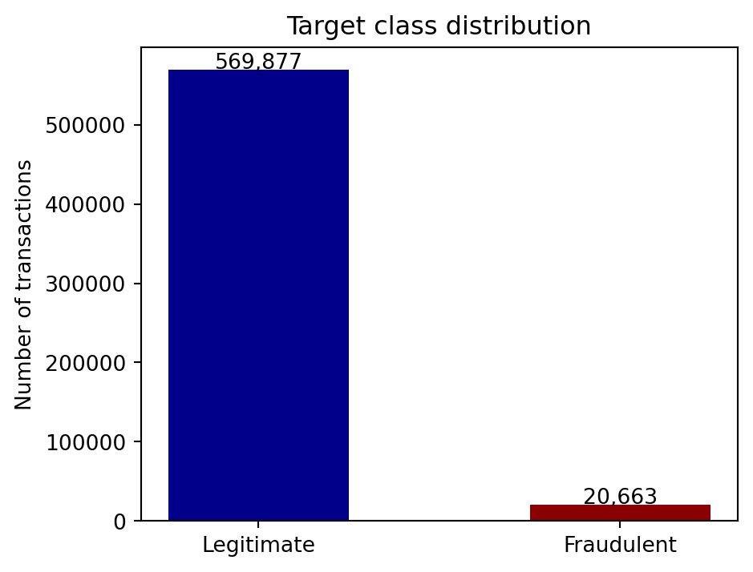
Time patterns
TransactionDT values represent second elapsed from a reference point (not an actual timestamp). However, we can extract from it day of the week and hour of day, which may be strog fraud signals.
nr_seconds_per_day = 24*60*60
transactions_df['hour'] = (transactions_df['TransactionDT'] % nr_seconds_per_day // 3600).astype(int)
transactions_df['day_of_week'] = (transactions_df['TransactionDT'] % (nr_seconds_per_day*7) // nr_seconds_per_day).astype(int)C:\Users\user\AppData\Local\Temp\ipykernel_14836\2186316027.py:2: PerformanceWarning: DataFrame is highly fragmented. This is usually the result of calling `frame.insert` many times, which has poor performance. Consider joining all columns at once using pd.concat(axis=1) instead. To get a de-fragmented frame, use `newframe = frame.copy()`
transactions_df['hour'] = (transactions_df['TransactionDT'] % nr_seconds_per_day // 3600).astype(int)
C:\Users\user\AppData\Local\Temp\ipykernel_14836\2186316027.py:3: PerformanceWarning: DataFrame is highly fragmented. This is usually the result of calling `frame.insert` many times, which has poor performance. Consider joining all columns at once using pd.concat(axis=1) instead. To get a de-fragmented frame, use `newframe = frame.copy()`
transactions_df['day_of_week'] = (transactions_df['TransactionDT'] % (nr_seconds_per_day*7) // nr_seconds_per_day).astype(int)hourly_rate = transactions_df.groupby("hour")[TARGET_COL].mean().reset_index()
fig, ax = plt.subplots(figsize=(15, 5))
ax.bar(
hourly_rate['hour'],
hourly_rate[TARGET_COL]*100,
color=target_colors[1],
alpha=0.8
)
ax.axhline(fraud_rate*100, color="black", linestyle='--', linewidth=1, label=f'Overall fraud rate ({fraud_rate:.1%})')
ax.set_xlabel("Hour of day")
ax.set_ylabel("Fraud Rate (%)")
ax.legend()
ax.set_title("Fraud Rate by Hour of Day")
plt.tight_layout()
plt.show()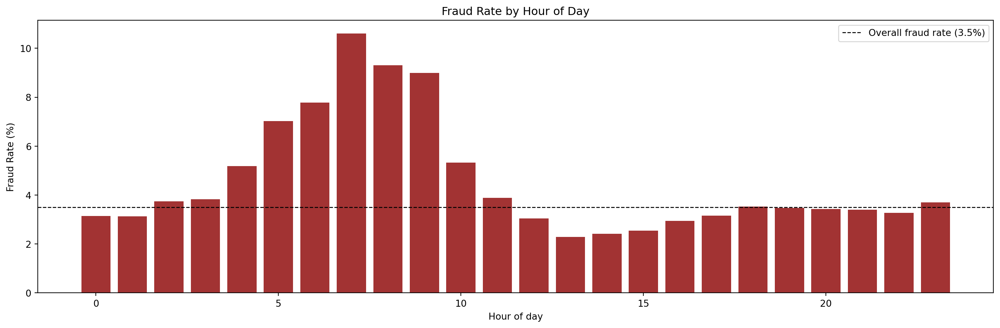
day_names = ['Mon', 'Tue', 'Wed', 'Thu', 'Fri', 'Sat', 'Sun']
daily_rate = transactions_df.groupby("day_of_week")[TARGET_COL].mean().reset_index()
fig, ax = plt.subplots(figsize=(15, 5))
ax.bar(
daily_rate['day_of_week'],
daily_rate[TARGET_COL]*100,
color=target_colors[1],
alpha=0.8
)
ax.set_xticks(range(7))
ax.set_xticklabels(day_names)
ax.axhline(fraud_rate*100, color="black", linestyle='--', linewidth=1, label=f'Overall fraud rate ({fraud_rate:.1%})')
ax.set_xlabel("Day of week")
ax.set_ylabel("Fraud Rate (%)")
ax.legend()
ax.set_title("Fraud Rate by Day of week")
plt.tight_layout()
plt.show()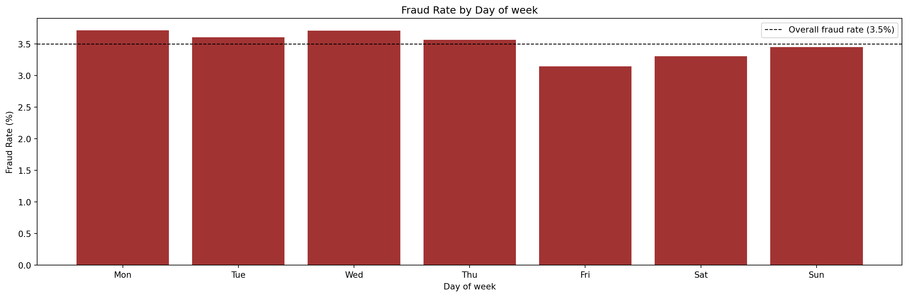
Transaction amount
legit = transactions_df[transactions_df[TARGET_COL] == 0]['TransactionAmt']
fraud = transactions_df[transactions_df[TARGET_COL] == 1]['TransactionAmt']
txn_amount_summary = pd.DataFrame({
target_labels[0]: legit.describe(),
target_labels[1]: fraud.describe()
})
txn_amount_summary| Legitimate | Fraudulent | |
|---|---|---|
| count | 569877.000000 | 20663.000000 |
| mean | 134.511665 | 149.244779 |
| std | 239.395078 | 232.212163 |
| min | 0.251000 | 0.292000 |
| 25% | 43.970000 | 35.044000 |
| 50% | 68.500000 | 75.000000 |
| 75% | 120.000000 | 161.000000 |
| max | 31937.391000 | 5191.000000 |
The data is highly skewed, so using a logscale makes the distribution readable and meaningful.
Most transactions (fraud or not) are relatively low-value. However, fraud is slightly more concentrated at lower amounts.
fig, ax = plt.subplots()
bins = np.logspace(0, 5, 80)
ax.hist(legit, bins=bins, alpha=0.6, color=target_colors[0], label = target_labels[0], density=True)
ax.hist(fraud, bins=bins, alpha=0.6, color=target_colors[1], label = target_labels[1], density=True)
ax.set_xscale('log')
ax.set_xlabel('Transaction amount (log scale)')
ax.set_ylabel('Density')
ax.set_title('Transaction Amount Distribution')
ax.legend()
plt.tight_layout()
plt.show()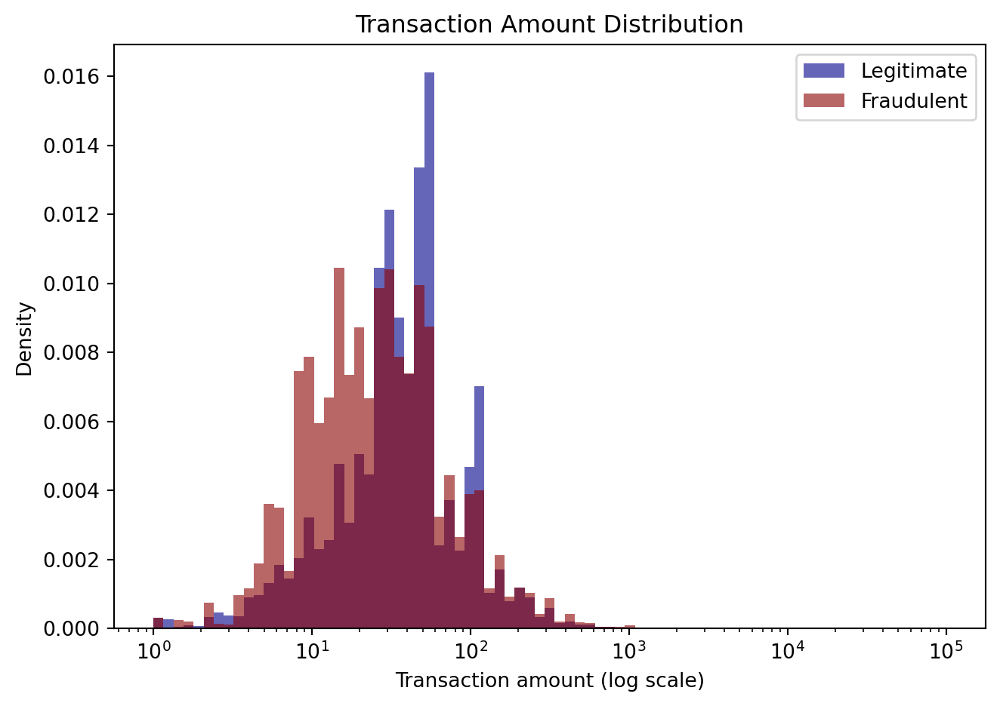
V-features
There’re 339 anonymised V-features, which are Vesta engineered rich features, including ranking, counting, and other entity relations.
v_cols = [c for c in transactions_df.columns if c.startswith('V')]
v_missing = transactions_df[v_cols].isnull().mean()
fig, ax = plt.subplots(figsize=(10, 5))
ax.plot(
range(len(v_cols)),
sorted(v_missing.values)
)
ax.axhline(0.5, color='black', linestyle='--', label="50% missing rate")
ax.fill_between(
range(len(v_cols)),
sorted(v_missing.values),
alpha=0.2
)
ax.set_xlabel("V_feature rank, sorted by missing rate")
ax.set_ylabel("Missing rate")
ax.set_title("Missing rate across V-features")
ax.legend()
plt.show()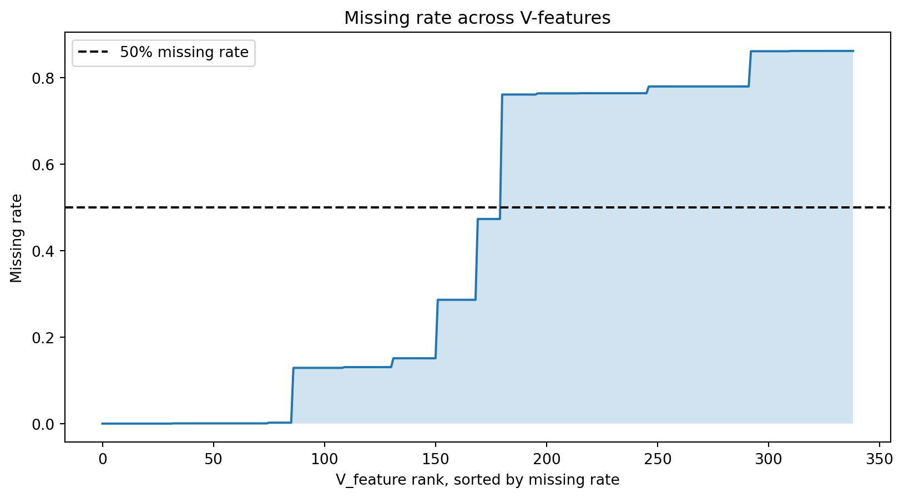
Card features
card_cols = [c for c in transactions_df.columns if c.startswith('card')]
for card in card_cols:
tmp = transactions_df.groupby(card)[TARGET_COL].agg(['mean', 'count']).rename(columns={'mean': 'fraud_rate', 'count':'n'}).sort_values(by='fraud_rate', ascending=False)
fig, ax = plt.subplots()
ax.bar(tmp.index, tmp['fraud_rate']*100, color=target_colors[1], alpha=0.8)
ax.axhline(fraud_rate*100, linestyle='--', color='black', linewidth=1)
ax.set_ylabel('Fraud rate (%)')
ax.set_title(f'Fraud rate by Card Type ({card})')
plt.tight_layout()
plt.show()
# transactions_df.groupby('card6')[TARGET_COL].agg(['mean', 'count']).rename(columns={'mean': 'fraud_rate', 'count':'n'}).sort_values(by='fraud_rate', ascending=False)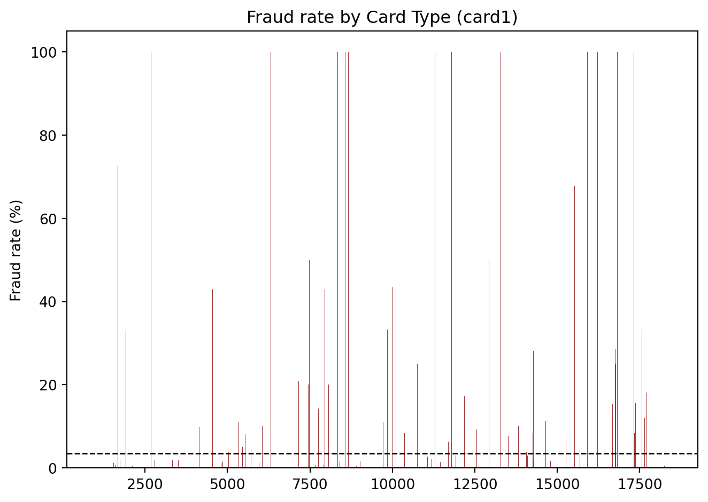
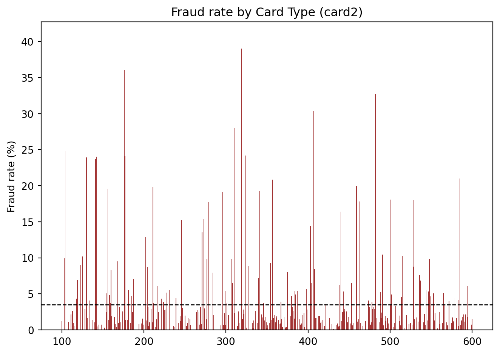
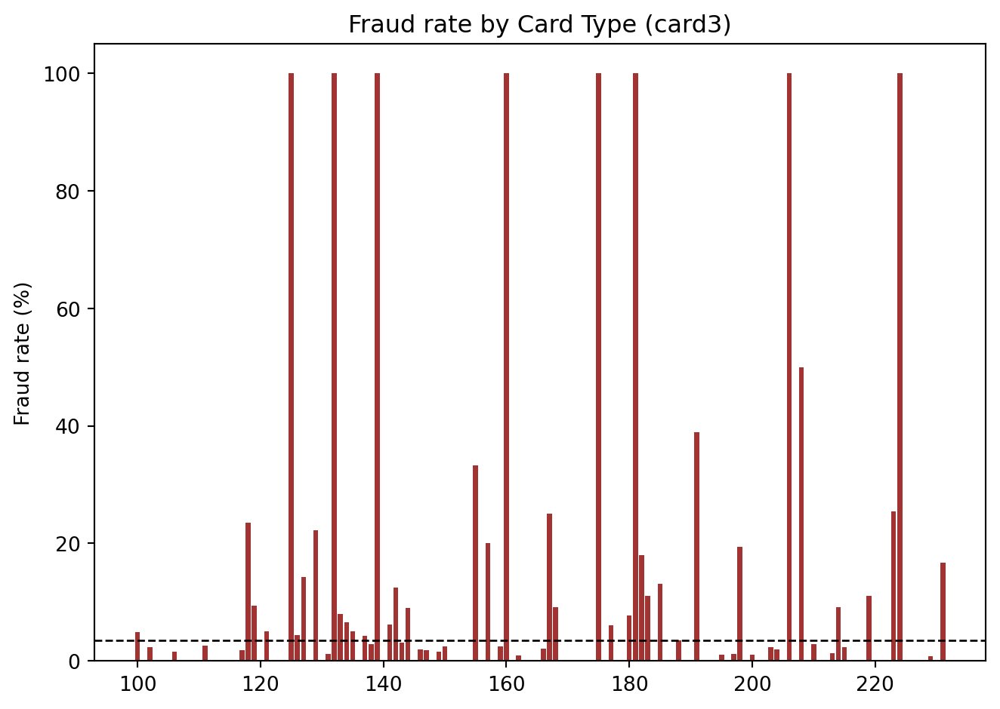
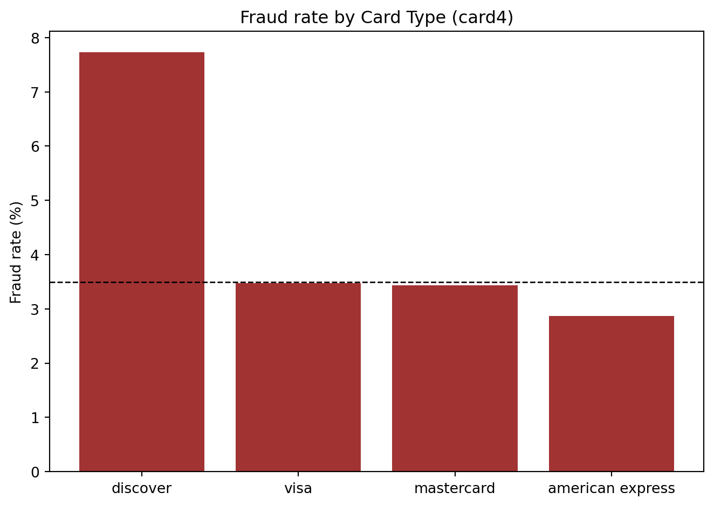
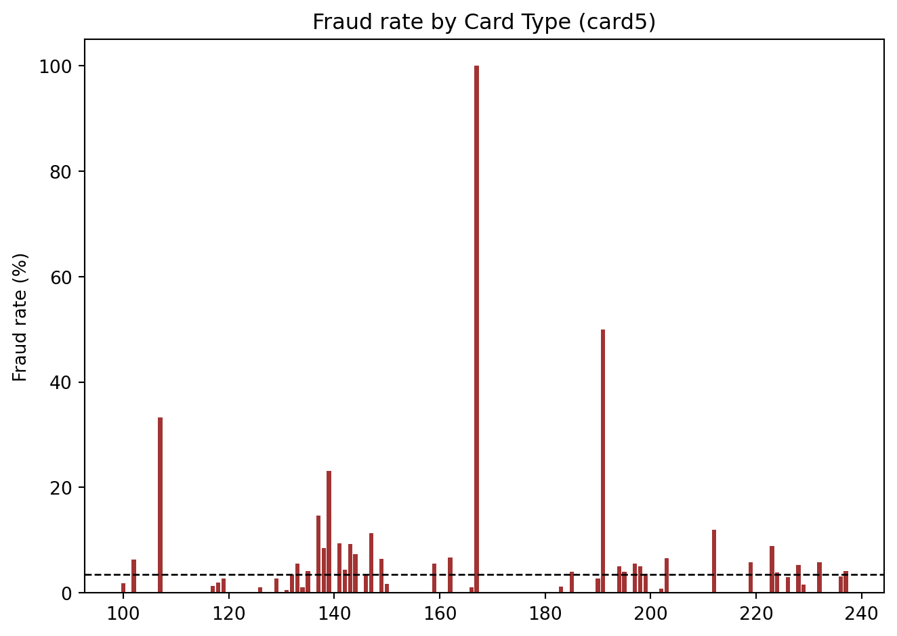
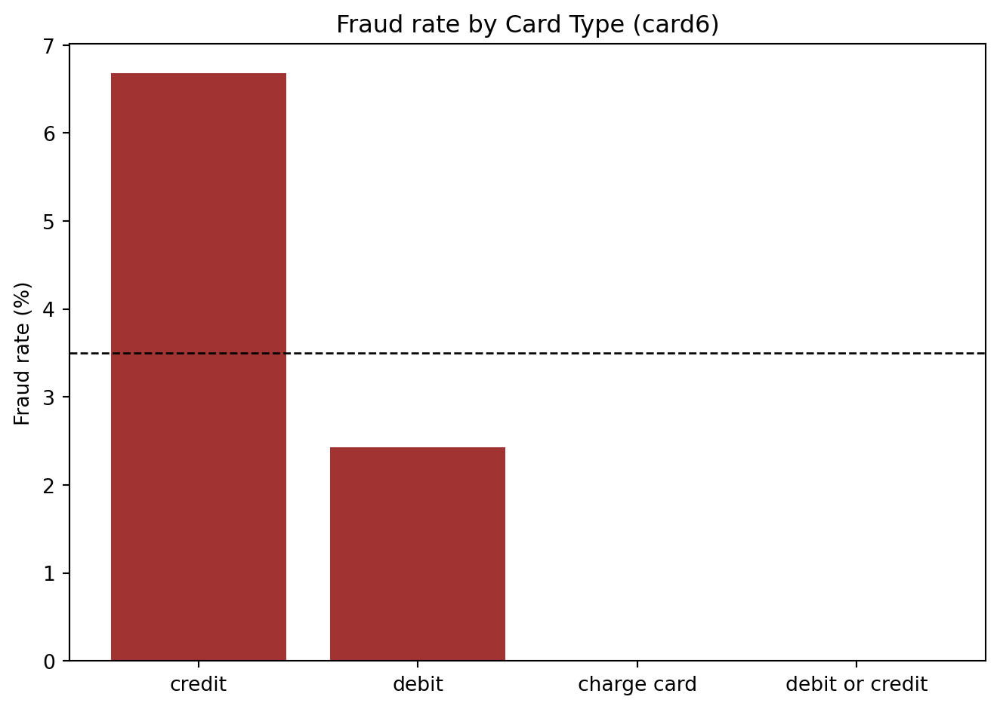